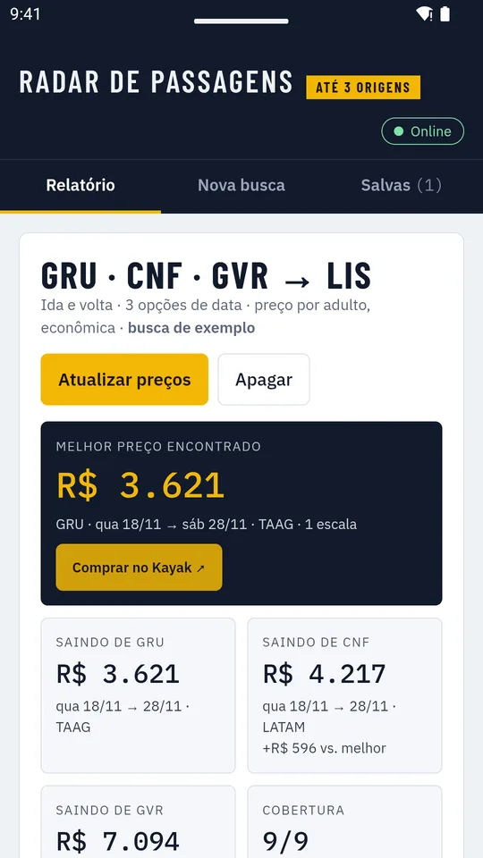
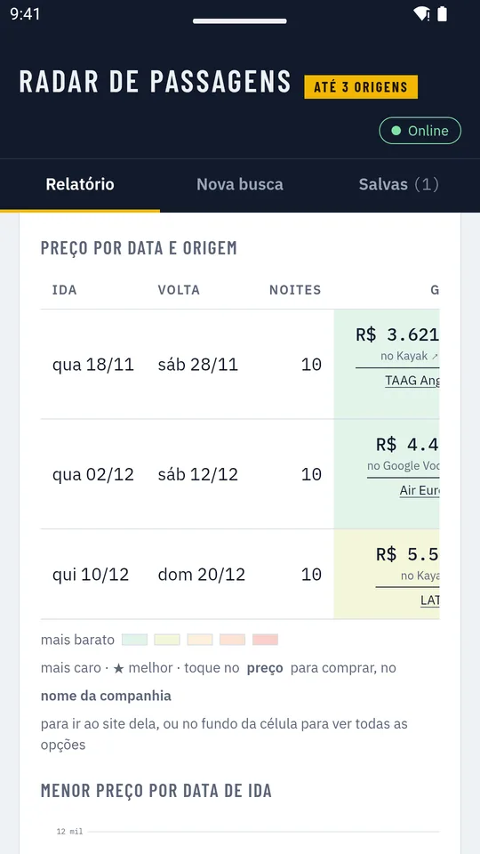
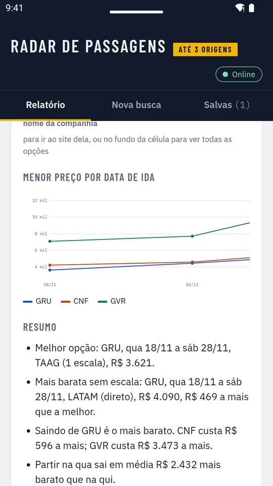
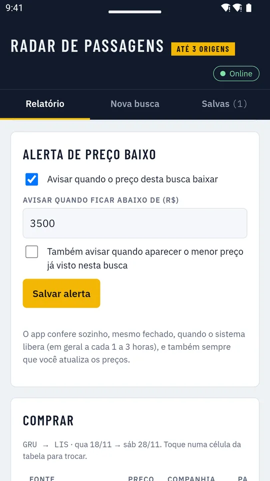
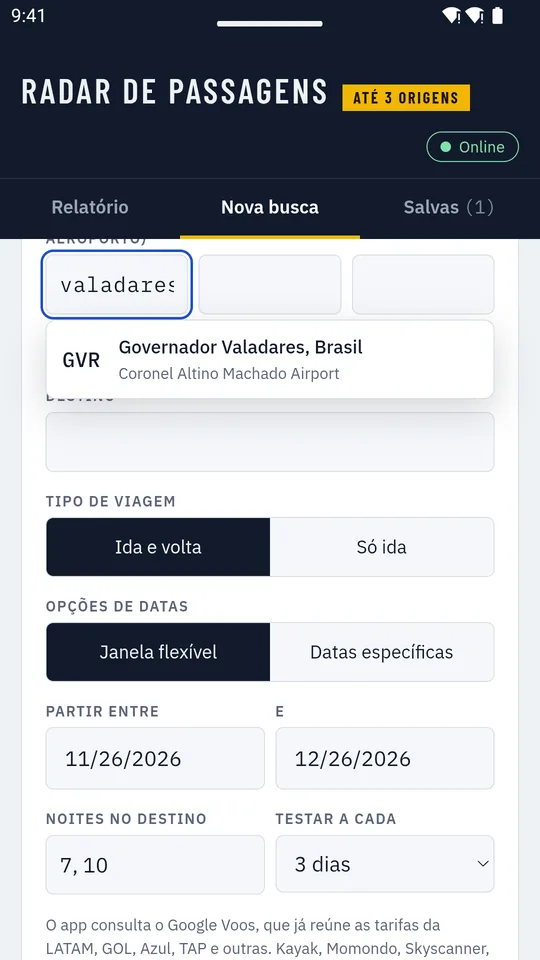
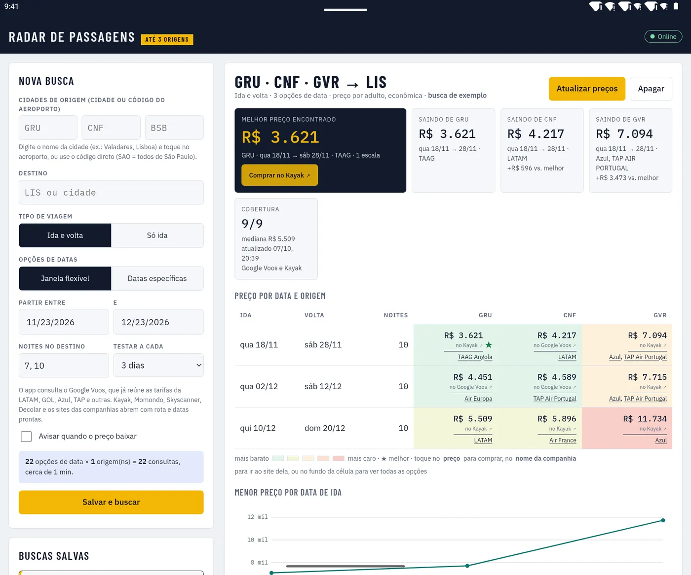

Ache a passagem mais barata saindo de até 3 cidades
Escolha as cidades de onde você pode sair, o destino e as datas que servem. O Radar de Passagens compara tudo de uma vez e mostra onde e quando vale a pena comprar.
Grátis para AndroidBaixar na Google Play- Sem cadastro
- Alerta de preço baixo
- Celular e tablet

Como funciona
Três passos entre a ideia da viagem e o link de compra.
Digite as cidades
Escreva o nome da cidade, como "Valadares" ou "Lisboa", e toque no aeroporto. São mais de 4 mil na lista.
Escolha as datas
Uma janela flexível (partir entre tal e tal dia, ficar 7 ou 10 noites) ou datas exatas, ida e volta ou só ida.
Compare e compre
Veja a tabela de preços e toque no valor para abrir a compra no site onde ele foi encontrado.
Todas as datas numa tabela
Cada linha é uma combinação de ida e volta, cada coluna uma cidade de origem. As cores vão do mais barato ao mais caro, e a estrela marca o melhor preço.
- Companhia, escalas e duração de cada voo
- Toque no preço para comprar
- Toque na companhia para abrir o site dela

Descubra o melhor dia para viajar
O gráfico mostra como o preço muda conforme a data de ida, e o resumo explica em português claro qual é a melhor opção, a mais barata sem escala e quanto se economiza saindo de cada cidade.

Alerta quando o preço baixar
Diga quanto quer pagar. O app confere os preços sozinho, de tempos em tempos, mesmo fechado, e avisa por notificação quando a passagem ficar no seu valor ou abaixo.
- Toque na notificação para abrir o preço e comprar
- Opção de avisar também quando aparecer o menor preço já visto

Compre onde preferir
O Radar de Passagens não vende passagens: ele mostra onde estão os melhores preços. A compra é feita no site da companhia ou da agência, com a rota e as datas já preenchidas.
- Atalhos para Kayak, Momondo, Skyscanner e Decolar
- Sites da LATAM, GOL, Azul, TAP e outras companhias

Também no tablet
Na tela grande, a busca fica de um lado e o relatório do outro.

Sem cadastro. Seus dados ficam no seu celular.
Não precisa criar conta nem informar senha. As buscas e os alertas ficam guardados só no aparelho e nunca são enviados para nós. Leia a política de privacidade.
Perguntas frequentes
O app é grátis?
Sim. O download e o uso são gratuitos, sem anúncios e sem assinatura.
Preciso criar uma conta?
Não. Basta instalar e começar a buscar.
O app vende passagens?
Não. Ele compara os preços e leva você ao site da companhia aérea ou da agência para comprar. O valor final é o mostrado no site de compra, que pode mudar a qualquer momento.
De onde vêm os preços?
De consultas a buscadores de voos públicos, como o Google Voos, que reúne as tarifas da LATAM, GOL, Azul, TAP e outras companhias. Os preços são por adulto, na classe econômica.
Como funciona o alerta com o app fechado?
O Android libera o app para conferir os preços de tempos em tempos, em geral a cada 1 a 3 horas. Quando o preço fica no valor que você definiu ou abaixo, chega uma notificação.
Funciona no iPhone?
Por enquanto o Radar de Passagens está disponível para Android, em celulares e tablets.
Sua próxima viagem pode sair mais barata
Compare até 3 cidades de origem, veja as melhores datas e deixe o alerta trabalhando por você.
Grátis para AndroidBaixar na Google Play